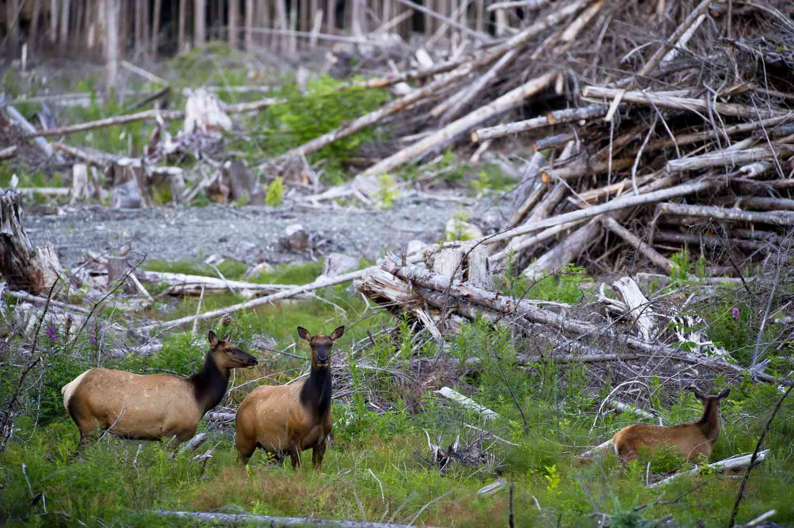
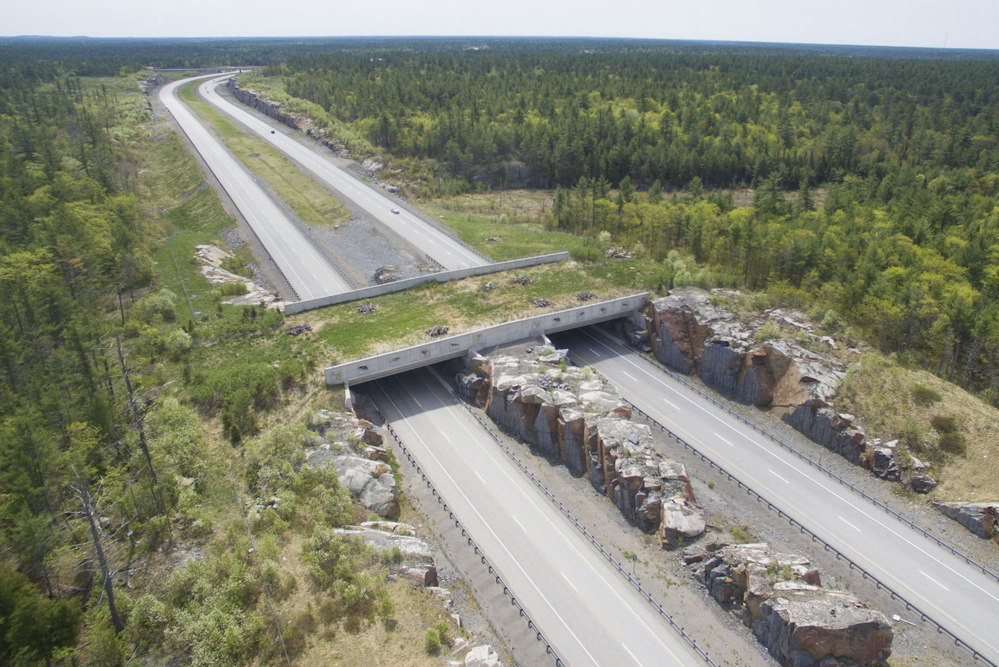

What are endangered species and what is this advocacy about?
Do you know what humpback whales, bald eagles, Florida manatees, gray wolves, and California condors have in common? You're right! All animals were rescued from extinction with the help of the Endangered Species Act (ESA), which was passed in 1973. Across all environmental protections, the ESA seems to be the most effective one. This advocacy aims to spread awareness and protection of endangered species and their habitats. This advocacy works to defend, strengthen, fund, and ensure effective implementation of the Endangered Species Act and other core wildlife protection laws. An endangered species is an organism that is at risk of extinction - the process of the complete disappearance of a specific species from Earth. Many different aspects cause species to become endangered but two main reasons affect these species the most. These are the: loss of habitat and loss of genetic variation.
Loss of Habitat
Habitat loss is a reduction in the amount of space where species can survive and produce. It affects 85% of all endangered animal species. It can echo up the food chain and disrupt the flow of the ecosystem. There are three main types of habitat loss. These are habitat destruction, habitat fragmentation, and habitat degradation. These usually occur due to natural or man-made disasters.
Habitat destruction is damage to an area that specific species live in, reaching the point where that specific species can no longer survive, let alone thrive, in that area. This includes the construction of both previously undeveloped areas and the fringe of developed areas. Deforestation can have a huge impact on various animal and plant species living in that specific area. Deforestation usually occurs when there is a want or need for agricultural expansion, cattle breeding, timber extraction, mining, oil extraction, dam construction, and infrastructure development. Although this encourages and improves human civilization and industrialization, it can cause climate change, damage to natural habitats, and the loss of biodiversity. Natural disasters, such as earthquakes, floods, and volcanic eruptions, can also lead to habitat destruction. For instance, earthquakes can move land and are associated with subsequent tsunamis. Floods can cause erosion and the destruction of vegetation. Volcanic eruptions can destroy vegetation and change the nature of the land's surface and landscape through destructive processes, such as flank failure and caldera formation, and constructive processes, such as lava flows, domes, and pyroclastic deposits. Even the smallest amount of damage to an area can cause a massive impact on the environment.
Habitat fragmentation occurs when parts of a habitat are destroyed, leaving behind smaller unconnected areas or fragments. It is a major problem in our environment and can negatively impact wildlife in several ways. It can occur naturally because of fire, volcanic eruptions, or climate change. However, most of the time, it is caused by human activities. When plants are cleared for agriculture, rural development, urbanization, and the creation of hydroelectric reservoirs, habitat fragmentation occurs. An example of this is when a road is constructed through a woodland. Most of the wildlife living in the woods considers the road as an obstacle that only causes them difficulty. These fragmented habitats may not be large or connected enough to support species. It will become a hindrance to those species that require a large territory for reproduction and survival. It serves as a barrier that divides the woods into two smaller habitats. A ton of the remaining terrestrial wildlife habitats have been cut up into fragments by roads, bridges, and other structures. Some aquatic habitats have been divided into fragments by dams and water diversions. Also, migratory species will struggle to find places to rest and feed along their migration routes due to habitat fragmentation.
Loss of Genetic Variation
Genetic variation is the difference in the DNA sequence in a species' genomes. It is unique to each living thing on Earth. It allows species to adapt to changes in the environment. In most cases, a greater population means greater genetic variation. The loss of genetic variation can occur naturally or due to human activities. For instance, cheetahs are an example of threatened species in Africa and Asia. They have little genetic variation for they went through a long period of inbreeding. As a result, they cannot quickly adapt to changes in the environment compared to other animals. Overhunting and overfishing have also reduced the population of many animals. A reduced population means there will be fewer breeding pairs. With fewer breeding pairs, genetic variation decreases. Monoculture, the agricultural method of growing a single crop, can also reduce genetic variation. Due to this, plant breeders often go back to wild varieties to collect genes that will help the cultivated plants to thrive and adapt.